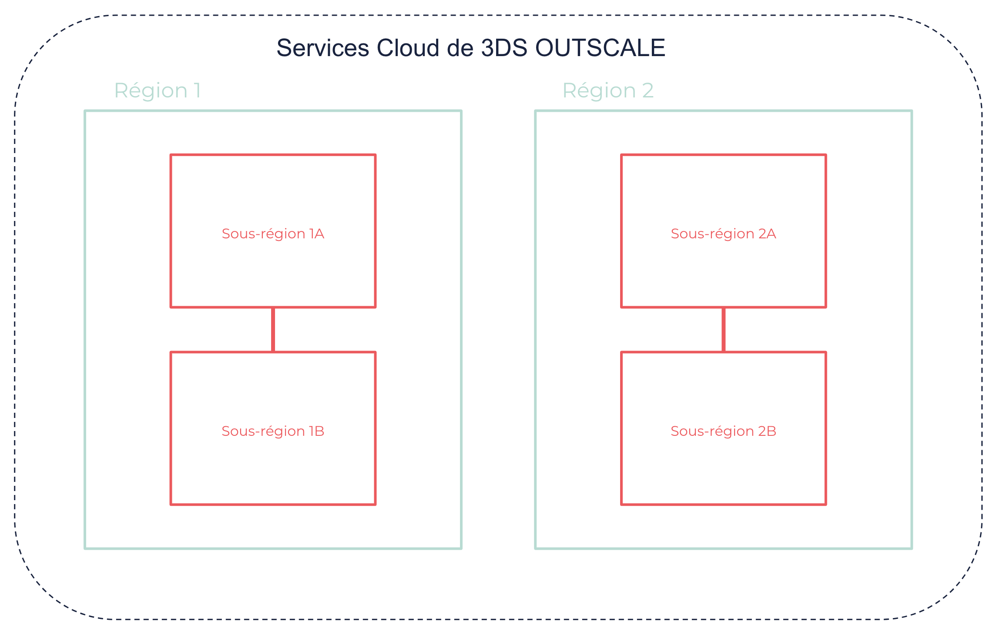

À propos des Régions et Sous-régions
Les services OUTSCALE sont disponibles à plusieurs endroits dans le monde. L’infrastructure OUTSCALE est composée de différentes Régions et Sous-régions isolées les unes des autres, dans lesquelles vous pouvez créer vos ressources Cloud.
Informations générales
Régions
Une Région est une aire géographique dans laquelle vous pouvez héberger des ressources Cloud. Les Régions sont indépendantes les unes des autres, et ne partagent pas de ressources.
Lorsque vous déployez des ressources, la Région est spécifiée dans l’endpoint de la requête API. Les endpoints sont des URL qui constituent le point d’entrée vers un service Cloud. Pour en savoir plus, voir Référence des endpoints d’API.
|
Il n’y a aucun transfert automatique de données entre Régions. Les données de vos ressources restent dans la Région où vous les avez stockées, et sont protégées par les législations locales. Vous pouvez cependant copier votre compte ou des ressources entre différentes Régions. Pour en savoir plus, voir À propos de votre compte. |
La communication entre Régions se fait typiquement via Internet. Pour en savoir plus sur les plages d’IP publiques disponibles pour chaque Région, voir IP publiques OUTSCALE.
Sous-régions
À l’intérieur d’une Région, une Sous-région est un emplacement précis qui correspond habituellement à un data center physique. Les Sous-régions sont isolées les unes des autres, mais la communication à faible latence est rendue possible grâce à des liens de fibres optiques.
Tandis que certaines ressources sont déployées au niveau de la Région en tant que telle, certaines ressources sont déployées dans des Sous-régions spécifiques. Vous pouvez choisir de déployer vos ressources dans différentes Sous-régions afin de les isoler les unes des autres dans l’infrastructure physique, et ainsi réduire les risques en cas d’indisponibilité.

Mapping entre Sous-régions et zones physiques
Le tableau ci-dessous présente les Régions, Sous-régions et zones physiques publiques d’OUTSCALE :
| Région | Sous-régions | Zones physiques |
|---|---|---|
eu-west-2 |
eu-west-2a ou eu-west-2b |
PAR1 (Magny-les-Hameaux, France) |
eu-west-2a ou eu-west-2b |
PAR4 (Pantin, France) |
|
us-east-2 |
us-east-2a ou us-east-2b |
NJ1 (Clifton, New Jersey, États-Unis) |
us-east-2a ou us-east-2b |
NJ2 (Secaucus, New Jersey, États-Unis) |
|
us-west-1 |
us-west-1a ou us-west-1b |
SV1 (San Jose, Californie, États-Unis) |
us-west-1a ou us-west-1b |
SV2 (Santa Clara, Californie, États-Unis) |
|
cloudgouv-eu-west-1 |
cloudgouv-eu-west-1a ou cloudgouv-eu-west-1b ou cloudgouv-eu-west-1c |
SEC1 (Pantin, France) |
cloudgouv-eu-west-1a ou cloudgouv-eu-west-1b ou cloudgouv-eu-west-1c |
SEC2 (Magny-les-Hameaux, France) |
|
cloudgouv-eu-west-1a ou cloudgouv-eu-west-1b ou cloudgouv-eu-west-1c |
SEC3 (Aubergenville, France) |
|
ap-northeast-1 |
ap-northeast-1a ou ap-northeast-1b |
JPN1 (Tokyo, Japon) |
ap-northeast-1a ou ap-northeast-1b |
JPN2 (Tokyo, Japon) |
|
Le mapping exact entre Sous-régions et zones physiques dépend du compte. Ce mapping est défini aléatoirement à chaque création de compte et ne peut pas être modifié ultérieurement. Par exemple :
Ce mapping aléatoire aide à répartir les ressources de manière équitable dans la Région, au lieu qu’une zone physique soit considérée comme la principale par rapport à l’autre. |
|
Pages connexes